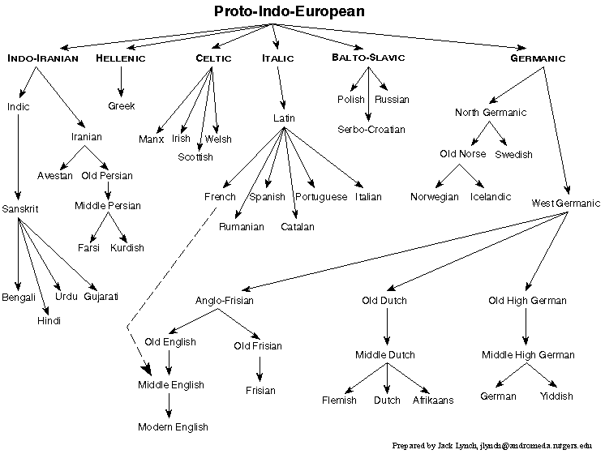

Daler Mehndi - Tunak Tunak Tun
Guest lecture material is totally eligible for tests and homeworks
Please be considerate during lectures
Get your clickers ready today!
We discuss Language
We may discuss taboo subjects, words, constructions, or concepts
It’s all meant to further academic pursuits
Please come talk to me if you’re troubled.
Cognates and Borrowings
Splitting S, A, and O
Indic Languages
Hindustani
Sanskrit
Pali

A word shared among two sisters is a cognate
A word incorporated from another language is a borrowing
English has done a lot of theft.
English
All human beings are born free and equal in dignity and rights. They are endowed with reason and conscience and should act towards one another in a spirit of brotherhood.
French
Tous les êtres humains naissent libres et égaux en dignité et en droits. Ils sont doués de raison et de conscience et doivent agir les uns envers les autres dans un esprit de fraternité.
“The problem with defending the purity of the English language is that English is about as pure as a cribhouse whore.
We don’t just borrow words; on occasion, English has pursued other languages down alleyways to beat them unconscious and rifle their pockets for new vocabulary.”
–James D. Nicoll
We talk about two kinds of borrowing in language
When you borrow a word completely, it’s called a ‘loanword’
When you borrow an expression or word, but use native words for each element, it’s called a ‘calque’
‘Tortilla’ from Spanish ‘Tortilla’
‘Dinghy’ from Hindustani ‘Dinghi’
‘Shampoo’ from Hindustani ‘chāmpo’ ([tʃãːpoː])’
‘Yoga’ from Sanskrit
компютер (kompjuter) - ‘computer’
амбиция (ambitsiya) - ‘ambition’
хип хоп (hip hop) - ‘hip hop’
майндфак (mayndfak) - ‘mindfuck’
‘loanword’ from German lehnwort
‘moment of truth’ from Spanish el momento de la verdad
‘staircase wit’ from French l’esprit de l’escalier
детский сад (detski sad, ‘child garden’) from German kindergarten
cрать кирпичами (srat kirpichami, ‘shit brick-INS.pl’) from English ‘to shit a brick’
The English word ‘Rhinestone’, coming from the French “Caillou du Rhin” (‘rhine pebble’), is a…
A: Loanword
B: Calque
(but English is a thug)
(oh, that’s right, Indic languages…)
(It’ll be easier each time, trust me!)
We talked about how we mark roles in a sentence, but…
Group S and A together
The same case markers are used for S and A
Subjects and agents are nominative!
English: “I slept”, “I saw her”
Russian: Ya spal, Ya videl yeo
English: *“Me slept”
Russian: *“Menya spal”
Kheta-le kheti-lai majagartsa - “The boy loves the girl”
khora-le kajo - “The horse ate.”
hek-lai bostio - “He lived.”
AGENT-le OBJECT-lai majagartsa - “The boy loves the girl”
SUBJECT-le kajo - “The horse ate.”
SUBJECT-lai bostio - “He lived.”
Agent = -le
Object = -lai
Subject =
A system where S, A, and O are each marked differently, in some or all contexts
Agent == -le
Object == -lai
Horse subject = -le
Human subject = -lai
The case marker used depends on Animacy!!
| In Nepali, what case marker would attach to “rock” in “The rock fell”? |
| A) -le |
| B) -lai |
| Agent = -le Object = -lai Inanimate subject = -le Animate subject = -lai |

In Nepali, what case marker would attach to “Rock” in “The Rock fell”?
-le
-lai
Agent = -le
Object = -lai
Inanimate subject = -le
Animate subject = -lai
—
In Nepali, what case marker would attach to “rock” in “The rock hit Michael Bay”?
-le
-lai
Agent = -le
Object = -lai
Inanimate subject = -le
Animate subject = -lai
|
| In Nepali, what case marker would attach to “Rock” in “The Rock hit Michael Bay”? |
| A) -le |
| B) -lai |
| Agent = -le Object = -lai Inanimate subject = -le Animate subject = -lai |
Nominative/Accusative - S and A are marked the same
Ergative/Absolutive - S and O are marked the same
Split Ergativity - They’re not grouped, or the groupings change!
We swear, this is about it for case!
“This is supposed to be about languages!!!1!”
(OK, OK! Sheesh.)

Aryan comes from Sanskrit ‘arya’, meaning “high” or “noble”
I’m using “Indic” because it’s quicker to say, that’s all.
More than 1.5 billion people speak an Indic Language as a first language
Four Indic languages are among the 20 most spoken in the world!
Hindustani
Bengali
Punjabi
Marathi
Not all Indian languages are Indic
Hindi - An official language of India
Urdu - An official language of Pakistan
Nepali - The official language of Nepal
Sinhala - The official language of Sri Lanka
Dhivehi - The official language of the Maldives
Sanskrit is the Liturgical Language of Hinduism
Pali is a liturgical language of Buddhism
(So, yeah, important)
Retroflexion
Honorifics
SOV Word Order
Grammatical Gender
Indic languages are the main IE languages which have retroflex sounds
[ʈ ɖ ʈʰ ɖʱ]
Words or affixes which encode formality in speech
Honorific Prefixes:
Honorific Suffixes:
Replacements:
Often Masculine, Feminine, and Neuter
Unpredictable in most languages (Gujarati, Marathi, Hindi, etc)
Nepali, we’ve talked about
Hindustani is Ergative only in the past tense
It’s complicated in other Indic languages, too!
Hindustani
Sanskrit
Pali
 |
English: All human beings are born free and equal in dignity and rights. They are endowed with reason and conscience and should act towards one another in a spirit of brotherhood.
Hindi: अनुच्छेद 1—सभी मनुष्यों को गौरव और अधिकारों के विषय में जन्मजात स्वतन्त्रता प्राप्त हैं। उन्हें बुद्धि और अन्तरात्मा की देन प्राप्त है और परस्पर उन्हें भाईचारे के भाव से बर्ताव करना चाहिये।
Urdu: :دفعہ 1: تمام انسان آزاد اور حقوق و عزت کے اعتبار سے برابر پیدا ہوۓ ہیں۔ انہیں ضمیر اور عقل ودیعت ہوئی ہیں۔ اسلۓ انہیں ایک دوسرے کے ساتھ بھائی چارے کا سلوک کرنا چاہیۓ۔
The term for the greater language that is Hindi and Urdu
Has around 380 million speakers, 260 million speakers learning it as a first language
Hindi has many formal borrowings from Sanskrit
Urdu has borrowed heavily from Arabic and Persian
Hindi and Urdu use different writing systems for it
A language with multiple “centers” and standard forms.
English (US, UK, Australia, South Africa, etc.)
French (France, Canada, “International French”)
Portuguese (Brazil and Portugal)
Persian (Farsi, Dari, and Tajik)
Hindustani! (Hindi and Urdu)
A dialect of Old Indo-Aryan
Often used in Hindu and Buddhist rituals
Standardized in a grammar written by Pāṇini.
Sanskrit is a zombie-language (not a real term)

Om mani padme hum
“OM the jewel in the lotus HUM”
“Thus the six syllables, om mani padme hum, mean that in dependence on the practice of a path which is an indivisible union of method and wisdom, you can transform your impure body, speech, and mind into the pure exalted body, speech, and mind of a Buddha” - The 14th Dalai Lama
(at least in Boulder)
Likely a close relative of the Buddha’s spoken language
The language of Buddhist scriptures and manuscripts
The liturgical language of Theravada Buddhism
Lots of cases!
Mostly used by Buddhists, for reading Buddhist texts
:(
… but they’re all awesome!
Cognates are from genetics, borrowings are from theft
We don’t have to group S, A and O together
There are many Indic languages out there!
Hindustani is Hindi and Urdu
Sanskrit and Pali are both very important to many people
http://savethevowels.org/world/slides/lotw_7.html
{kind=link}